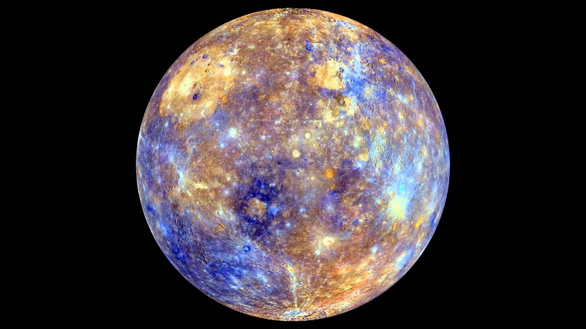

Además de ser el planeta más cercano al Sol, Mercurio es también el más pequeño del sistema solar. Al igual que la Tierra, Venus y Marte, Mercurio es un planeta terrestre o rocoso.
Mercurio es el planeta más pequeño de nuestro sistema solar – sólo un poco más grande que la luna de la Tierra. Es el planeta más cercano al Sol a una distancia de unos 58 millones de kilómetros o 0,39 UA. Un día en Mercurio (el tiempo que le toma a Mercurio para rotar sobre sí mismo) se realiza en 59 días terrestres, con lo que tiene un giro muy lento.
Mercurio hace una órbita completa alrededor del Sol (un año en el tiempo de Mercurio) en tan sólo 88 días de la Tierra, va muy deprisa en su rotación alrededor del Sol. Las temperaturas diurnas pueden alcanzar los 430 ºC y bajar a -180 ºC por la noche. Es poco probable que la vida (tal como lo conocemos) podría sobrevivir en este planeta. De pie en la superficie de Mercurio en su punto más cercano al Sol, el Sol aparecería unas de tres veces más grande que visto desde la Tierra.
